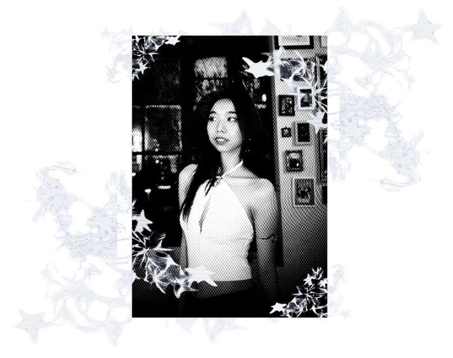
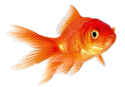
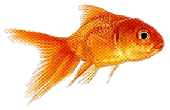

Hi! I'm Sheila Nicole Cheng
An analyst, developer, and designer with an interest in building thoughtful and user-centered digital solutions. I enjoy analyzing problems, developing functional systems, and designing clean, effective interfaces. I value clarity, creativity, and continuous learning, and I aim to create work that is both purposeful and impactful.
Beyond the technical side, I enjoy approaching work with curiosity and balance. I believe good solutions come from both structure and creativity, and I value taking breaks, exploring new ideas, and learning through experience to stay grounded and inspired.
I believe that what's meant for me will find me — so I focus on doing the work and letting things unfold.

